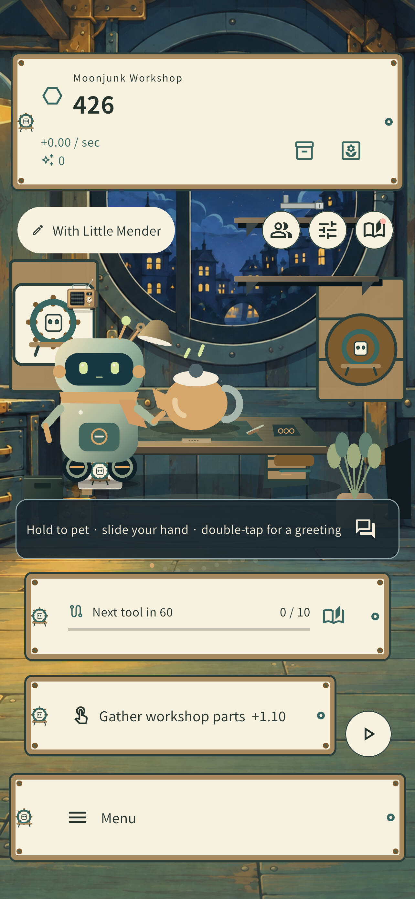
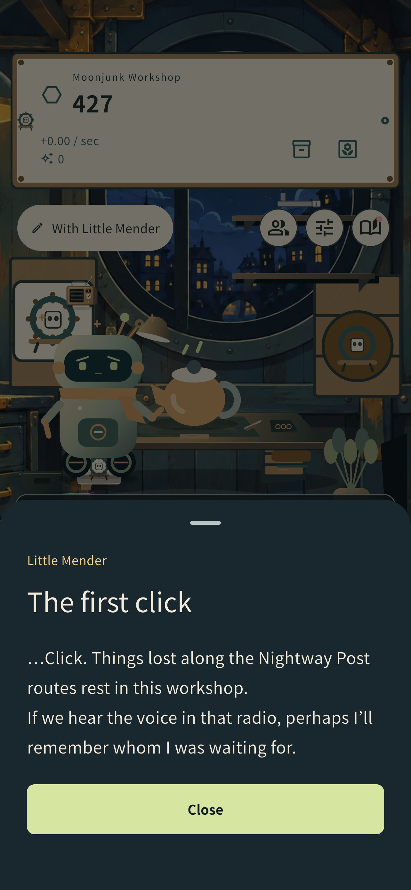
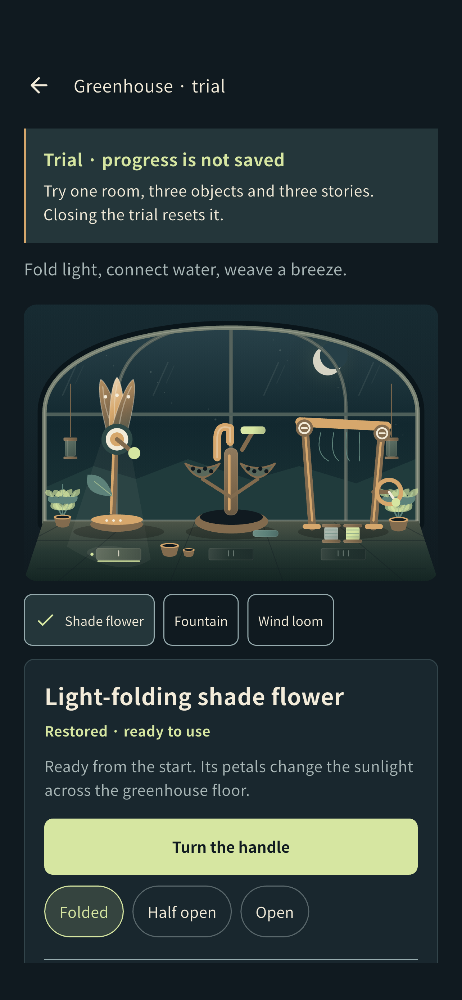

Gather a little possibility.
Collect spare parts and put together your first tools. Every small touch gets the workshop ready for the next repair.
A little workshop, a long way home
At the edge of the Nightway Post, a little workshop keeps its light on. We’re making a mobile game about gathering parts, mending forgotten objects, and finding the stories left inside a parcel.
In development · Public downloads and accounts for general users are not yet available.
Inside the workshop
Meet a friend in the workshop, read a memory, and explore the moonlit greenhouse.
Swipe sideways to explore all three screens.

View full imageGather parts and begin a repair with the little mender.

View full imageRead the first memory revealed during a repair.

View full imageExplore the greenhouse in a trial that does not save progress.
Actual gameplay captured on a development iOS simulator · English UI · Select an image to view it at full size.
Small repairs. Quiet discoveries.
Before saving a whole universe, there is one small thing you can help someone use again.
Collect spare parts and put together your first tools. Every small touch gets the workshop ready for the next repair.
Grow your toolkit and restore objects one by one. Their scratches and wear are part of the story, too.
Follow the stories left in forgotten objects with the mender. An ordinary parcel can lead to someone’s memories.
Before the public release
The game is in development and testing. The public launch date and available features will be announced when confirmed.
This website has no game sign-in, account creation, advertising, purchases or downloads.
Last updated: October 3, 2026
In development · Public downloads and accounts for general users are not yet available.
Development and privacy inquiries: ialskdji@gmail.com. Please review the contact and privacy notices before sending information.